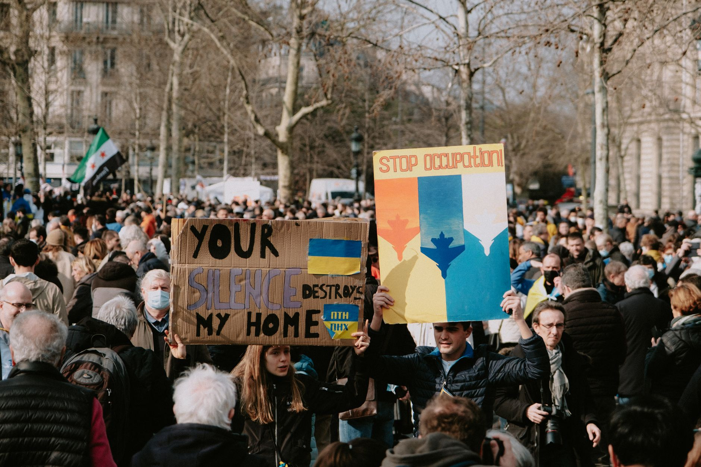

A nation on edge after recent riots
The streets of France have become a focal point of intense social friction following a week of widespread rioting that swept through various cities and towns. What began as localized incidents quickly escalated into a nationwide phenomenon, leaving local authorities struggling to maintain order and residents feeling increasingly unsafe in their own neighborhoods.
The scale of the destruction has been significant, with reports of property damage, public infrastructure being targeted, and clashes between protesters and law enforcement. This surge in unrest has highlighted deep-seated divisions within French society, ranging from economic grievances to issues regarding policing and social justice.
As the smoke clears from the most intense periods of violence, the underlying causes of the anger remain unaddressed. This lack of resolution is what has led many analysts to predict that the current unrest is not a singular event but rather a symptom of a much larger, ongoing struggle within the French political and social framework.
Preparations for upcoming demonstrations
Security forces across the country are currently on high alert as they prepare for a scheduled day of protest. Authorities have increased patrols in major urban centers like Paris, Lyon, and Marseille, anticipating that the upcoming demonstrations could trigger further escalations if not managed carefully.
The government has implemented several precautionary measures to mitigate the risk of violence, including:
The root causes of the social unrest
To understand why France is experiencing such intense periods of protest, one must look beyond the immediate triggers of the riots. Sociologists and political experts suggest that a combination of systemic issues has created a powder keg of resentment among various segments of the population.
The current state of unrest in France is a manifestation of long-standing frustrations regarding economic inequality and the perceived disconnect between the political elite and the working class.
Economic disparity plays a massive role in these tensions. With inflation affecting the cost of living and many feeling left behind by the modern economy, the frustration often boils over into the streets. When people feel they have no voice in the legislative process, they often turn to direct action as a means of being heard.
Impact on daily life and the economy
The ongoing instability is not just a political issue; it has tangible effects on the daily lives of millions of French citizens. Public transportation disruptions, business closures, and the general atmosphere of fear have altered the rhythm of life in many major cities.
From an economic perspective, the cost of the riots is mounting. Small business owners have reported significant losses due to looting and property damage, while the tourism sector, a vital part of the French economy, faces uncertainty as international travelers weigh the risks of visiting during times of unrest.
Furthermore, the psychological toll on the community cannot be ignored. The constant cycle of protest and police response creates a sense of instability that can erode social cohesion and trust in public institutions over time.
Looking toward the future of French stability
As France moves forward, the central question remains whether the government can implement meaningful reforms that address the grievances of the protesters. Without a clear path toward social and economic reconciliation, the cycle of protest and reaction is likely to continue.
The international community is watching closely, as the stability of France is often seen as a bellwether for democratic resilience in Europe. How the French leadership handles this period of unrest will likely set a precedent for how other nations manage similar social pressures in an era of increasing polarization.
While the immediate focus is on managing the upcoming protests, the long-term success of the country will depend on dialogue and structural change. Much like how public figures navigate complex personal and political narratives, such as when Meghan Markle Discusses Allegations Against Her Father, the French state must navigate a complex web of public perception and internal truth to find a way forward.
See Also
If you enjoyed this Current Events article, check out Meghan Markle Discusses Allegations Against Her Father for more useful reading.